Travel · 12 min read
Ten quiet places to watch the sun go down
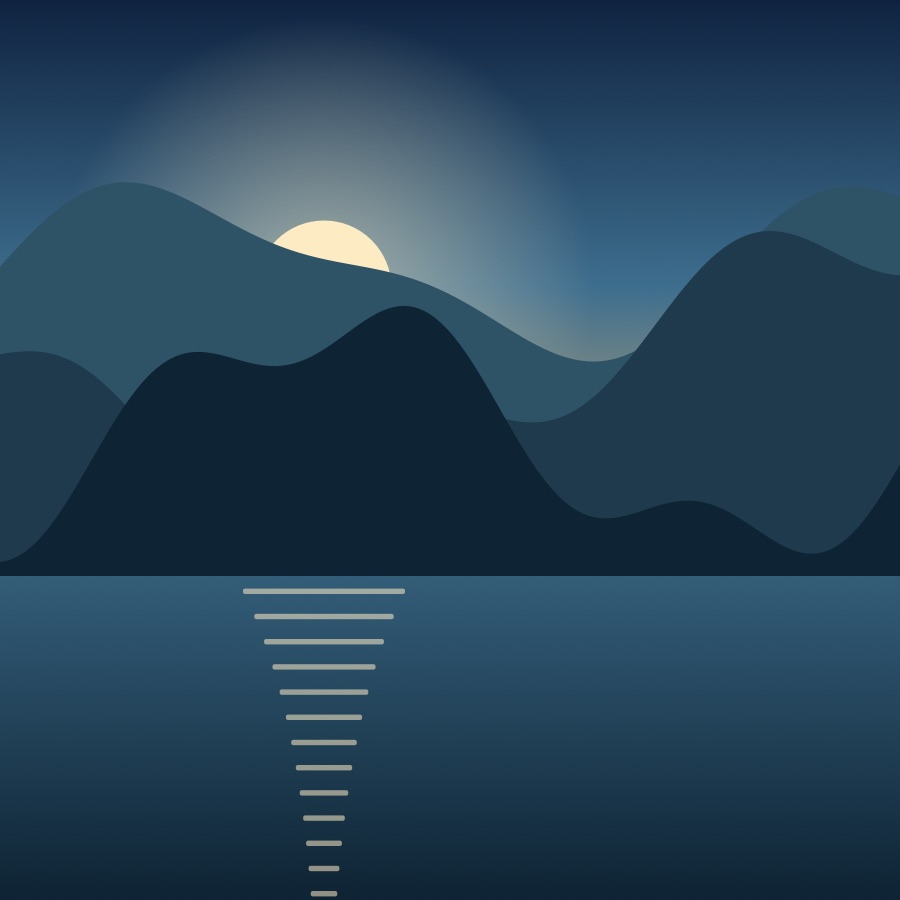
By Mira Okafor · Photos by the Northlight team · 27 October 2026A good sunset needs three things: a clear western horizon, somewhere to sit, and nobody selling you anything. We asked readers for their favourite spots, then spent a summer checking them against sunset tables and the weather.
The light changes fastest in the ten minutes after the sun touches the horizon. That’s when the sky turns from gold to pink. Bring a jacket: it gets cold quickly once the sun has gone.
1. The cliff path
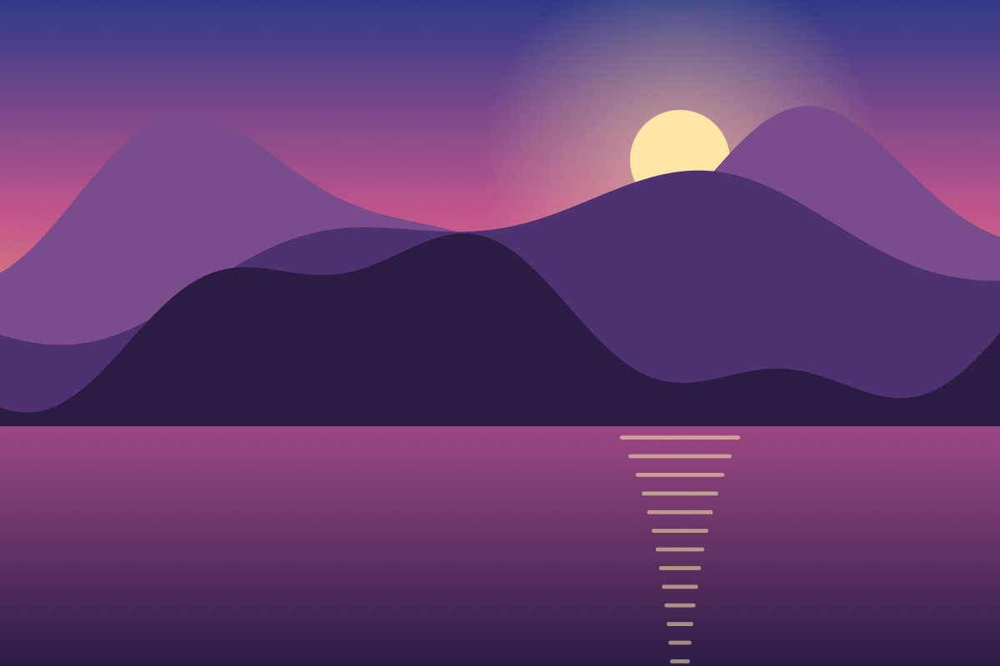
Park at the lighthouse and follow the coastal path north for twenty minutes. The bench at the second bend faces due west, and the gulls settle on the ledges below as the light goes.
2. The dunes at the end of the road
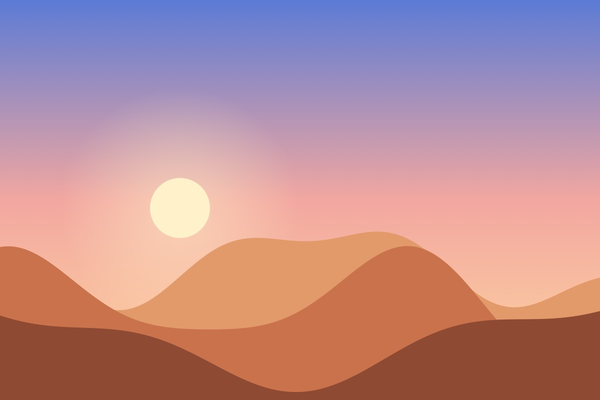
Bring water. The dune field holds the day’s heat long after dark, and the ridge line makes a perfect silhouette against the last of the orange.
3. The fjord ferry
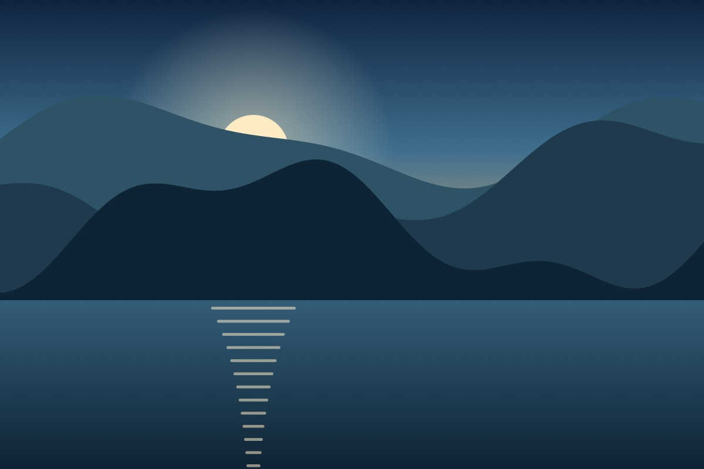
Take the last crossing of the day. The ferry turns west halfway over, and for a few minutes the whole deck is lit gold. Tickets are cheaper on board than at the terminal.
4. The canyon rim, south side
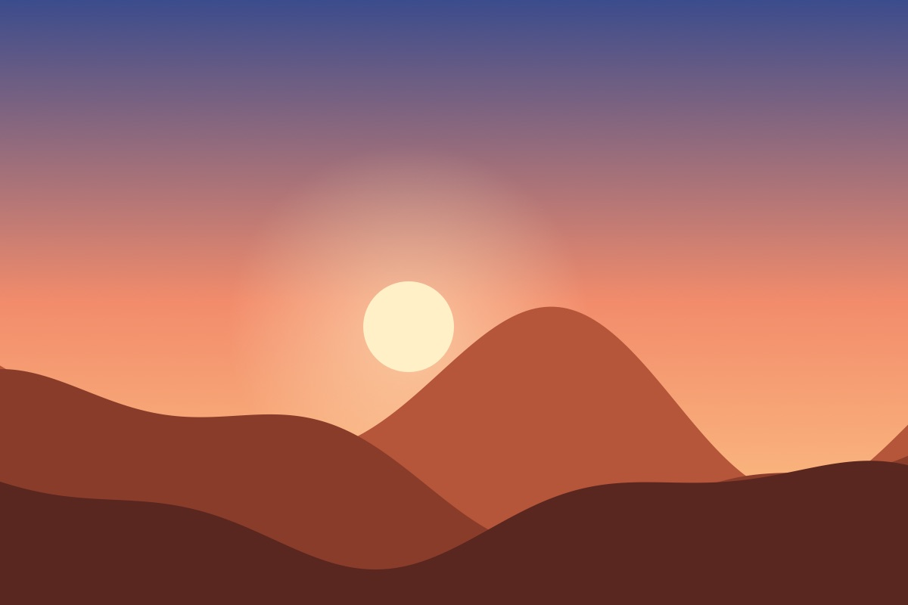
The south rim gets the crowds at noon and almost nobody at dusk. Walk ten minutes past the main lookout to a flat rock with a view straight down the canyon.
5. The lake below the ridge
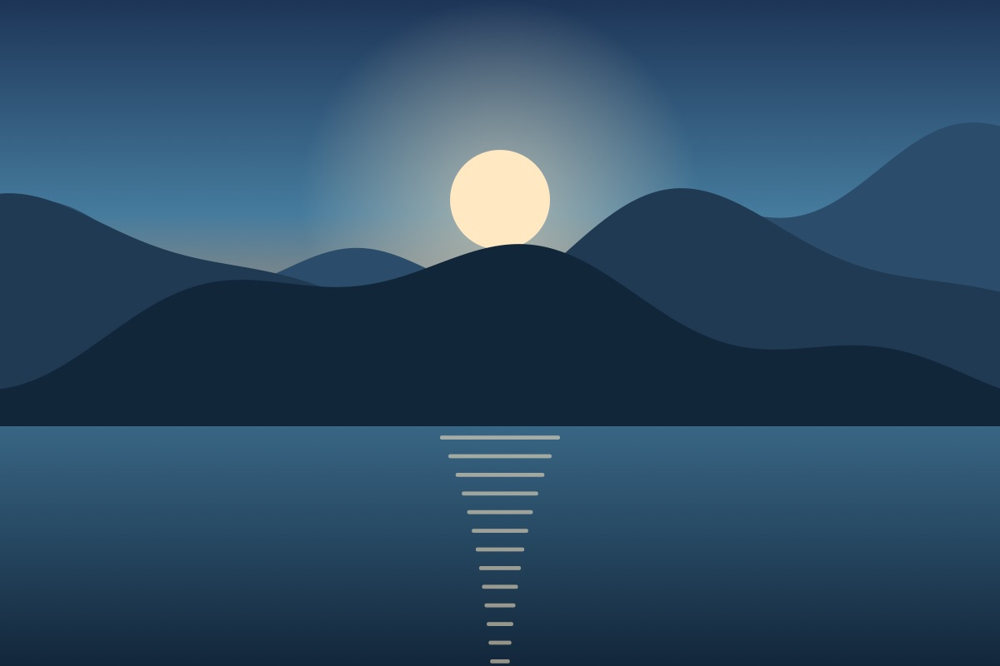
On a still evening the lake doubles the sky. Arrive early: the car park is small, and the best stretch of shore is a short scramble from the jetty.
6. The long meadow
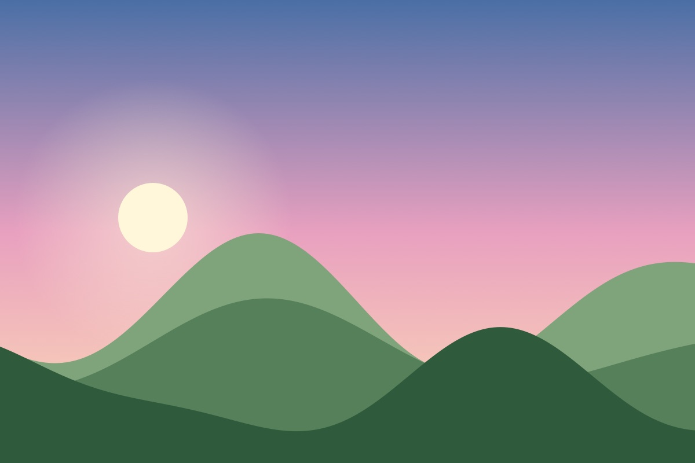
A gentle walk from the village, with a single oak to sit under. The grass is cut in late July, so August visits are the most comfortable.
More from the series
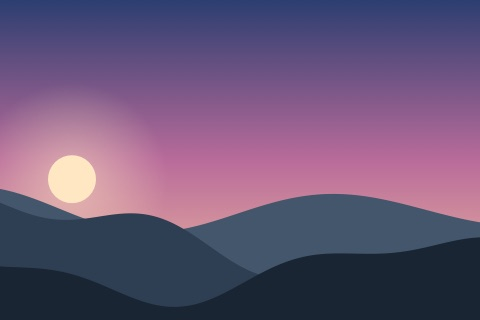
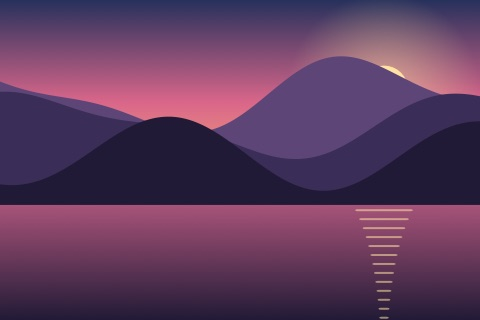
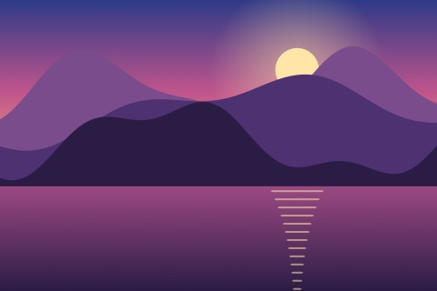
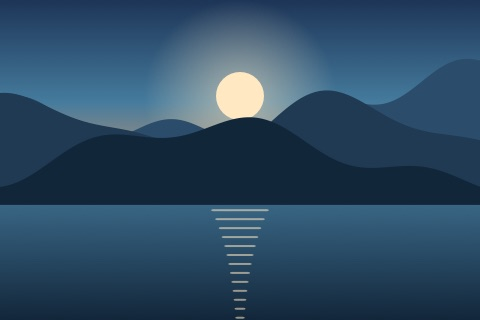
7. The terraced vineyard
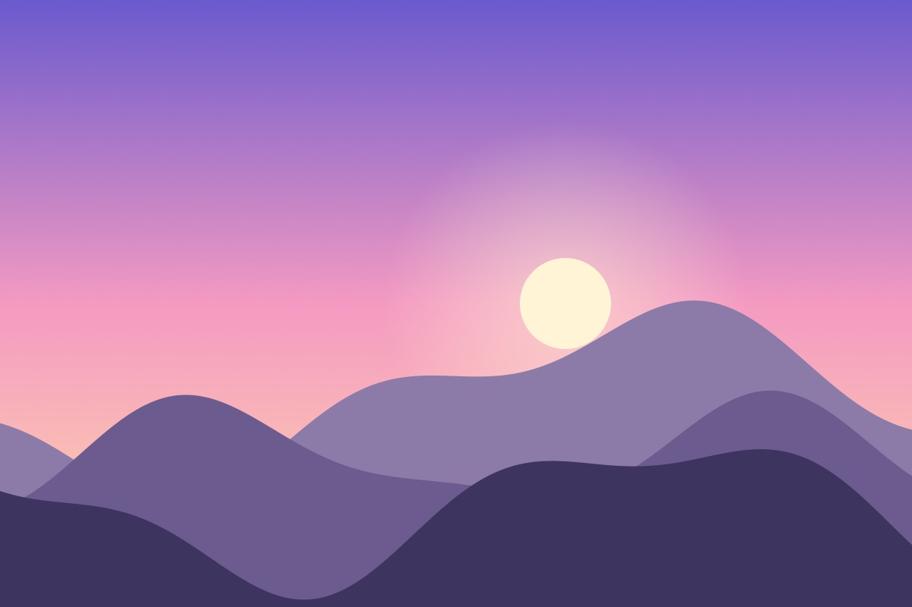
The top terrace looks over three valleys. The winery closes at six, but the footpath along the vines is open all evening.
8. The island jetty
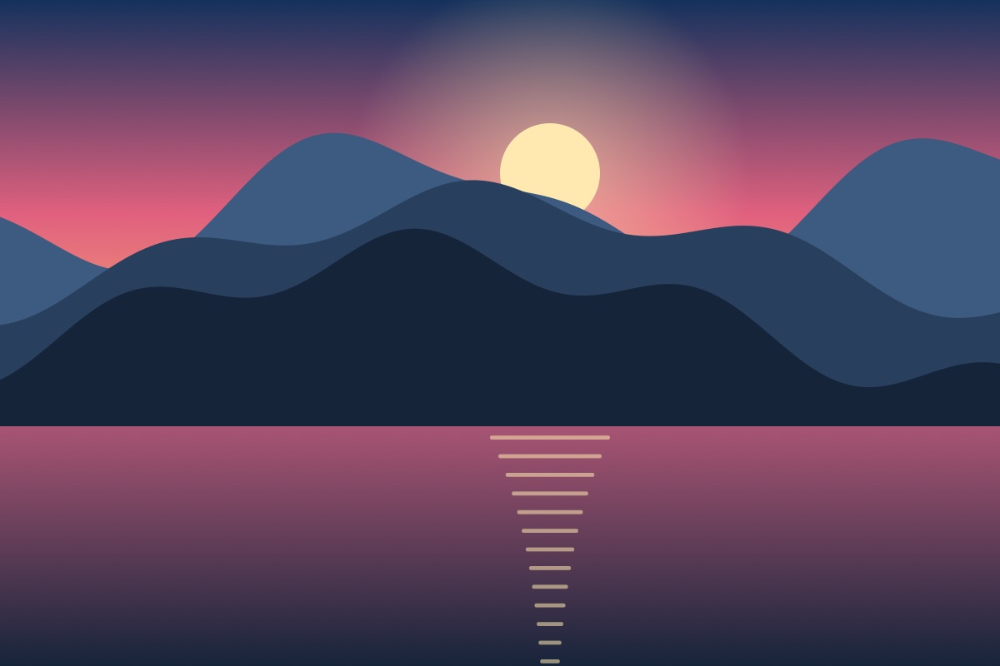
Only reachable at low tide, which makes it worth checking the tide tables twice. Sit at the end of the jetty and the island’s shadow reaches out across the water toward you.
9. The pine ridge lookout
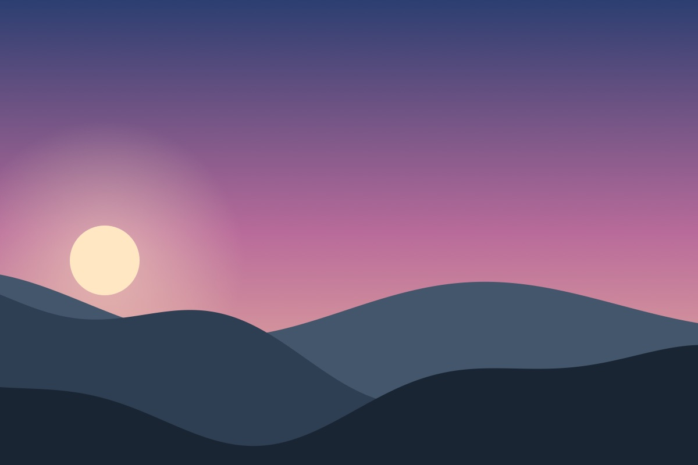
A steep forty minutes up, a fire lookout at the top, and a view over two hundred kilometres of forest. Bring a torch for the way down.
10. Back where we started
The harbour wall again, because it’s the easiest of the ten and still the one we go back to. Get chips from the kiosk and sit on the steps by the old crane.
Tell us your place
Know a better spot? Write to the editors, and we’ll visit it next summer.